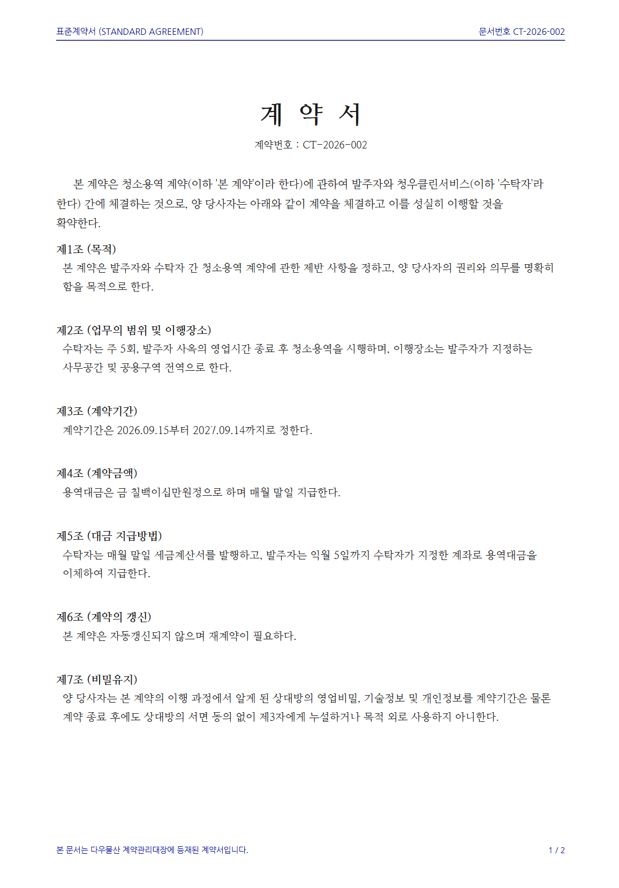
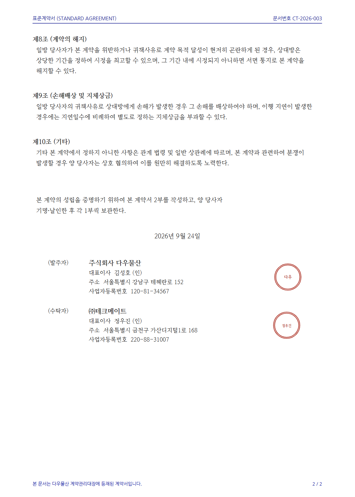

// 실습 2 · 계약서에서 계약종합 만들기
개요¶
한 줄 목표: 양식이 제각각인 계약서 PDF 8건에서 같은 항목을 뽑아 계약종합 엑셀 한 장으로 만들되, 문서에 없는 값은 지어내지 않는다.
오늘 받은 일¶
입사 3주차. 총무팀 사수가 말합니다.
"계약서가 폴더에 PDF로 쌓여 있어요. 계약서마다 형식과 내용이 제각각인데, 하나의 엑셀 파일로 정리해줘요. 계약번호, 계약명, 계약기간, 금액, 자동 갱신 여부, 그리고 계약 상대에 대한 정보는 반드시 포함되어야 해요. 단, 없는 항목을 그럴듯하게 채우면 절대 안 됩니다."
실습 1에서는 이미 표였던 것들을 합쳤지만, 이번에는 표가 아예 없는 줄글 계약서에서 데이터를 뽑아 만듭니다. 계약서·공문·회의록처럼 문서 더미에서 항목을 추려 표로 만드는 일은 어느 부서에나 있고, 사람이 하면 파일을 하나씩 열어 "계약 끝나는 날이 언제지, 금액이 얼마지" 찾아야 합니다.
위험한 지점은 하나입니다. 문서에 없는 값을 AI가 그럴듯하게 지어내는 것이죠. 뽑을 항목과 빈칸 규칙을 정해 AI에게 맡기고, 결과가 믿을 만한지 검증까지 마치면 계약종합 엑셀 한 장이 남습니다.
폴더에 있는 것¶
| 파일 | 무엇 |
|---|---|
CT-2026-001.pdf ~ CT-2026-008.pdf |
계약서 8건 |


실습에서 할 일¶
| 단계 | 할 일 |
|---|---|
| 1단계 | 계약서 8건에서 6개 항목을 뽑아 하나의 파일로 정리한다 |
| 2단계 | 계약종합을 원본과 대조하며 검산한다 |